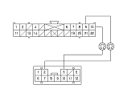
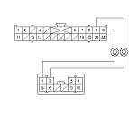

|
DTC B1776:
Microphone Input/Output Short to Ground/Open
NOTE: If you are troubleshooting multiple DTCs, be sure to follow the instructions in
B-CAN system diagnosis test mode A.
Is DTC B1776 indicated?
Is there continuity?
|
Is there continuity?
|
RHD type

LHD type

|
Is there continuity?
|